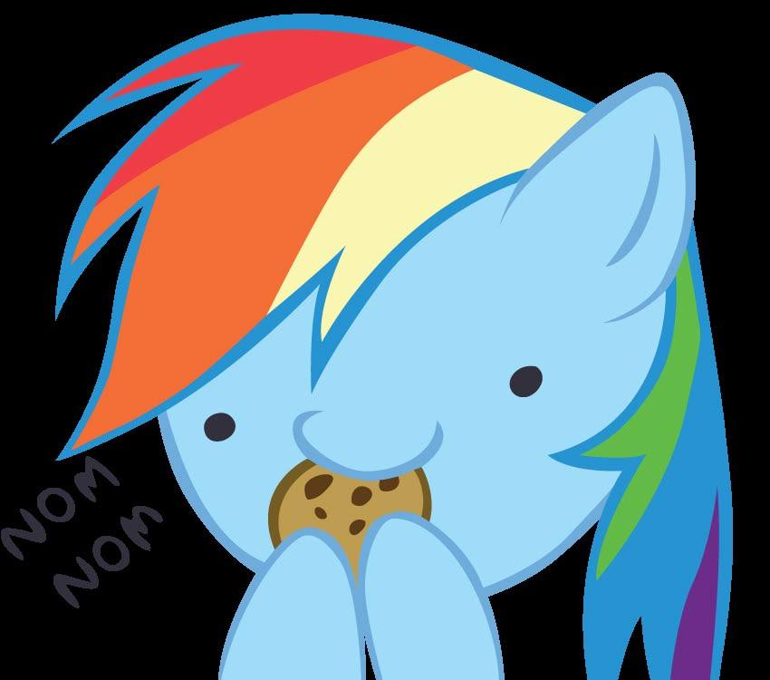
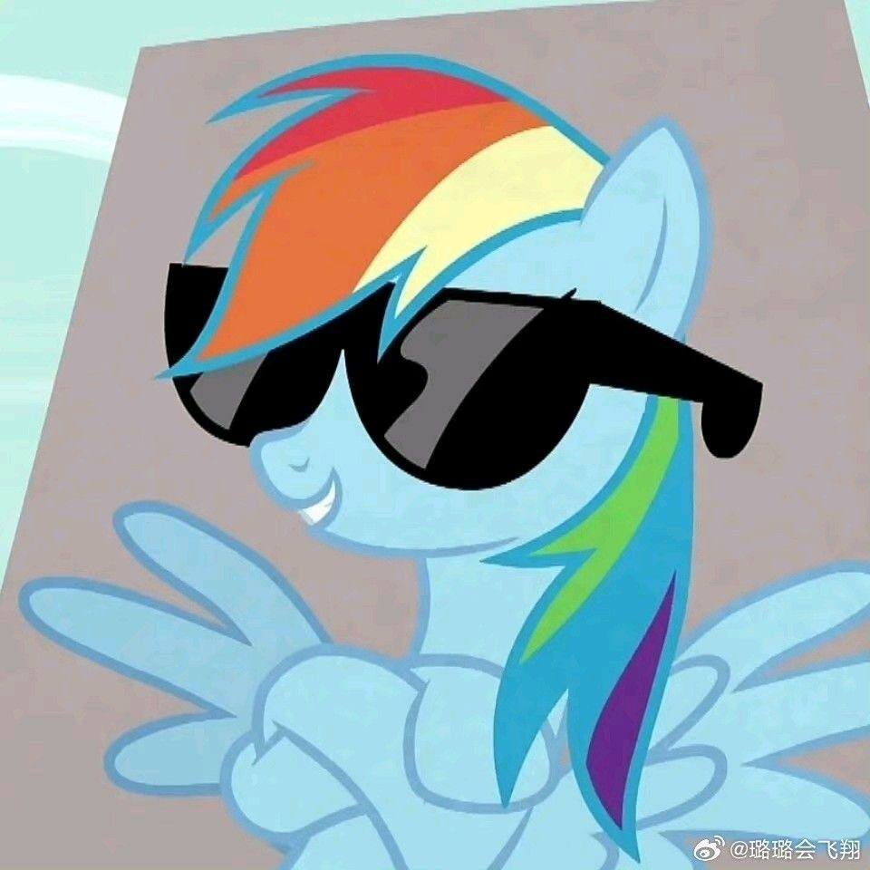
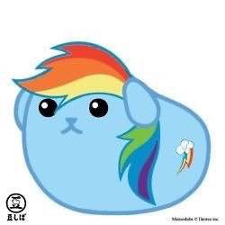
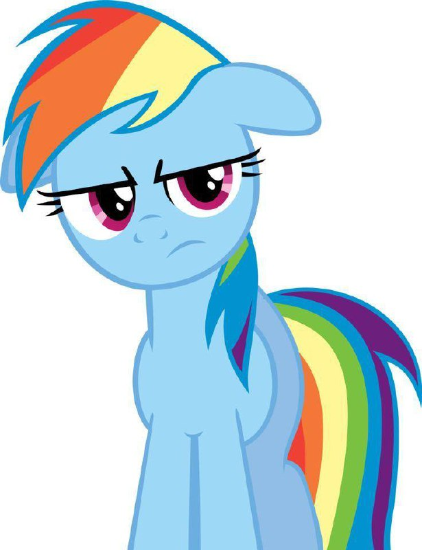
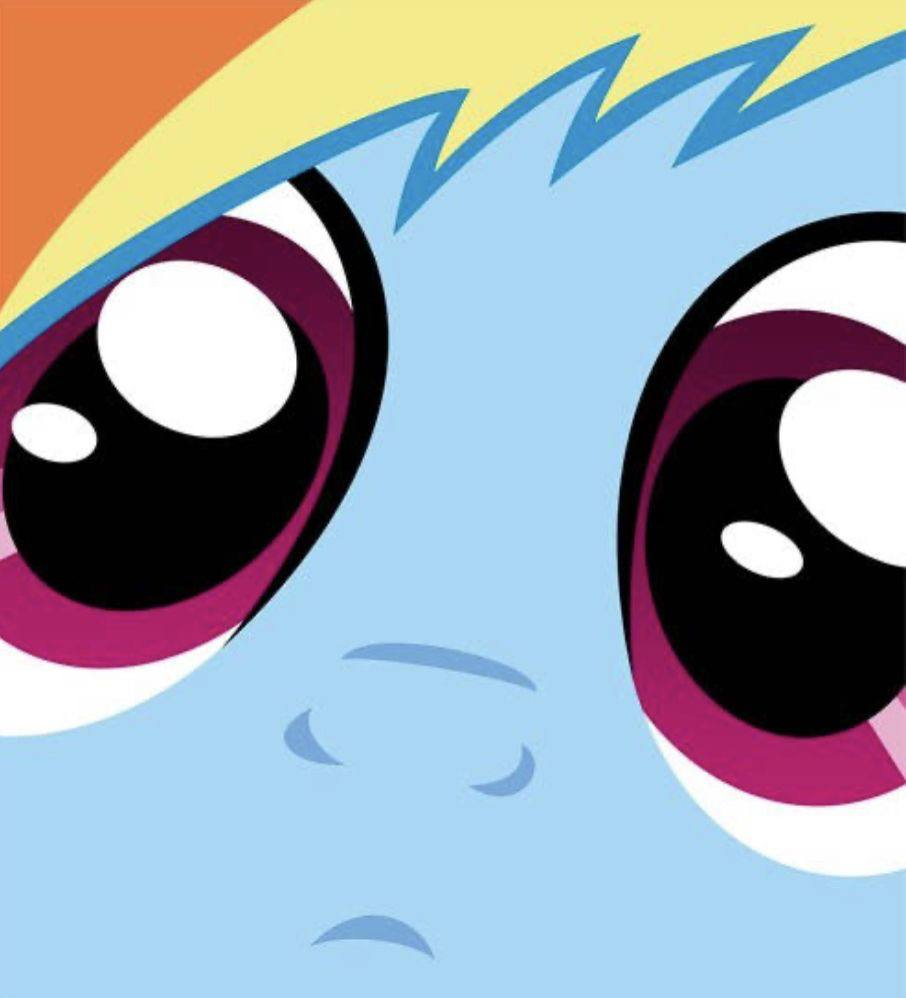

Рейнбоу Дэш — одна из главных героинь «Дружба — это чудо». Она отвечает за погоду и очищает небо в Понивилле. Будучи большой поклонницей «Чудо-молний», она становится резервным членом элитной летающей группы в «Тестирование, тестирование 1, 2, 3» и полноправным членом в «Дэш-новичок». В Sonic RainboomРарити и Принцесса Селестия заявляют, что она лучший летун во всей Эквестрии. У Рэйнбоу Дэш есть домашняя черепаха по имени Танк, которую она получила от Флаттершай в эпизоде. Пусть победит лучший питомец! Она олицетворяет элемент верности.
В «Зове милашки» Рэйнбоу упоминает, что она была первой в своём классе, кто получил знак милашки. Она рассказывает историю о том, как получила этот знак, «Искателям знака милашки» в «Хрониках знака милашки». Во время посещения молодёжного лётного лагеря она защитила Флаттершай от пары хулиганов и вызвала их на соревнование, в котором обнаружила в себе страсть к быстрым полётам и «победам». Из-за высокой скорости она создала звуковой ударную волну, а когда пересекла финишную черту, у неё появился знак отличия.
Рэйнбоу Дэш олицетворяет элемент верности и демонстрирует эту черту на протяжении всего сериала. В «Дружба — это чудо», часть 2 Найтмэр Мун предлагает Рэйнбоу стать лидером элитной летающей команды под названием «Теневые стрелы», если она бросит своих друзей и их поиски Элементов Гармонии, но Рэйнбоу отказывается.

В Радужном Водопаде Рэйнбоу предлагают выступить за престижную команду «Чудо-молнии» вместо «Понивилля» на соревнованиях по воздушной эстафете в рамках Игр Эквестрии. Сначала она тайно тренируется с «Чудо-молниями», но в конце концов решает выступать за «Понивилль».
В «Возвращении Гармонии. Часть 1» Рэйнбоу обещает не покидать Понивилль, пока не прояснится странная погода, хотя Клаудсдейл столкнулся с похожей проблемой. Однако позже в этом эпизоде Дискорд показывает ей ложное видение, в котором Клаудсдейл рушится без неё, и волшебным образом убеждает её бросить друзей в лабиринте из живой изгороди в замке Кантерлот. В The Cutie Re-Mark — Часть 2 в Эквестрии из альтернативной временной линии, которой правит Найтмер Мун, Рэйнбоу — одна из её верных королевских стражниц — требует, чтобы Твайлайт Спаркл ответила на её вопросы.
Рэйнбоу Дэш часто участвует в соревнованиях, ведь она открыла в себе страсть к «победе», когда участвовала в гонке с группой хулиганов в The Cutie Mark Chronicles. Она дважды пыталась стать рекордсменкой Эквестрии по прыжкам на мяче в Dragonshy, а в A Bird in the Hoof Рэйнбоу пытается устроить гонку с Флаттершай и Твайлайт Спаркл, когда они направляются к фонтану в Понивилле.

В «Друзьях осенней погоды» Рэйнбоу расстраивается, когда Эпплджек побеждает её в игре в подковки, и вызывает её на соревнование «Железный пони». Воспользовавшись своими крыльями, чтобы получить преимущество и выиграть состязание, Рэйнбоу принимает вызов Эпплджек на марафонскую гонку, хотя и продолжает использовать нечестные приёмы. В «Повелителе билетов», узнав, что Спайк не присоединится к Твайлайт на «Большом скачке», Рэйнбоу и Эпплджек устраивают «борьбу копытами», чтобы выиграть его неиспользованный билет. В «Замке Мане-иа» Эпплджек и Рэйнбоу остаются на ночь в «Замке двух сестёр», чтобы побороться за звание «самой смелой пони».
Когда Рэйнбоу начинает тренироваться с «Уандерболтс» в Рейнбоу-Фоллс, она говорит обеспокоенной Твайлайт, что летать с «победителями» веселее, чем с «непобедителями», и настаивает на том, что Понивилль всё равно пройдёт отбор, если она будет в команде. Однако к концу эпизода Рэйнбоу приходит к выводу, что, хотя она и любит побеждать, своих друзей она любит «гораздо больше».

Рэйнбоу Дэш часто бывает прямолинейной и несдержанной, когда снисходительно относится к другим, в том числе к своим друзьям. Она вскользь называет Твайлайт «ботаничкой» в «Друзья в осеннюю погоду» и «Прочти и поплачь», а Спайка — «хромым драконом» в «В поисках дракона». Когда Твайлайт пытается убедить Рэрити, что та не является посмешищем после неудачного показа мод в «Подходящая для успеха», Рэйнбоу возражает, что «в каком-то смысле так и есть». В «Трое — это толпа» после того, как Твайлайт делится своим планом провести день с принцессой Кэденс в бородатом Старвирле в передвижном музее, Рэйнбоу объясняет свой последующий кашель тем, что ей в горло попал «большой комок ламы».
Рейнбоу иногда ведёт себя излишне агрессивно. Она гневно допрашивает Флёр Де Вер, выясняя, как защитить Кристаллическую империю в «Кристаллическая империя — часть 1», а в «Кристаллическая империя — часть 2» Рейнбоу не даёт жителям увидеть фальшивое Кристаллическое сердце, гневно рыча на них. В «Дружба — это чудо, часть 2», когда Твайлайт уходит в библиотеку «Золотой дуб» после того, как Кошмарная Луна объявляет вечную ночь, Рейнбоу врывается туда и прямо обвиняет её в шпионаже. После того как Флим и Флам получают эксклюзивные права на «Сладкие яблочные угодья» в «Суперскоростном сидровом прессе 6000», Рэйнбоу угрожает «прессануть [их] в сидр», но её останавливает Эпплджек.
Рэйнбоу Дэш обычно ведёт себя игриво и озорно по отношению к другим. Она пытается усилить страх своих друзей перед Вечнозелёным лесом в мультсериале «Дружба — это чудо», часть 2, утверждая, что никто ещё не выбрался оттуда. В «Пора уже» после того, как Твайлайт решает стоять неподвижно, чтобы избежать ожидаемой катастрофы, Рэйнбоу пугает её, притворяясь, что заметила поблизости мышь. В «Птице в копытах» Рэйнбоу пытается рассмешить суровых королевских стражников, корча рожи прямо перед ними.
В некоторых эпизодах Радуга подшучивает над другими пони. Она устраивает розыгрыши в Понивилле вместе с Пинки Пай в «Гриффон не в духе», а в конце эпизода Радуга признаётся, что организовала розыгрыши для вечеринки Гильды. В «Затмении Луны» она проводит Ночь Кошмаров, пугая других пони облаком молний, одетым как Теневой Гром. В 28 розыгрышах позже Рэйнбоу устраивает серию розыгрышей над жителями Понивилля, в том числе переодевается в драконоподобное чудовище, чтобы напугать Флаттершай, подменяет парик Крэнки Дудл Донки живым скунсом и кладёт кирпич в сэндвич мистера Кейка.
Рэйнбоу Дэш склонна высоко ценить себя и уверена в своих физических способностях. В «Охотниках за хвастовством» она вместе с друзьями критикует Трикси за то, что та хвастается своими магическими способностями, отмечая, что Рэйнбоу и так «лучше остальных» горожан. В «Хрустальной империи — часть 2» она убеждает Флаттершай присоединиться к ней в рыцарском поединке, чтобы подбодрить Хрустальных пони, утверждая, что её «крутость способна поднять пони настроение». Когда Флаттершай начинает плакать после первого поединка, Рэйнбоу неохотно соглашается быть с ней помягче, но настаивает на том, что ей нужно поддерживать свою репутацию.

Иногда уверенность Рэйнбоу в себе ослабевает. В «Таинственной кобыле» она наслаждается положительным вниманием жителей Понивилля после того, как совершила несколько героических подвигов; однако позже в этом же эпизоде Рэйнбоу расстраивается, когда «Таинственная кобыла» привлекает к себе внимание своими явно более выдающимися способностями. Рэйнбоу сомневается в своей способности выиграть «Соревнование лучших юных летунов»» после того, как над ней насмехается группа «хулиганов» в «Звуковом дождевом буме». Позже, когда Облачная долина пегасы убеждают Рарити принять участие в соревновании, используя её очаровательные крылья бабочки, Рэйнбоу падает в обморок от волнения.
Рэйнбоу старается поддерживать имидж смелой и спортивной пони и старается избегать действий или поведения, которые кажутся женственными. В «Понивилле. Секретно» она впадает в отчаяние после того, как в «Жеребёнок. Свободная пресса» её назвали «супермягкотелой». В конце «Последнего забега» Рэйнбоу плачет, когда Эпплджек мирится со своими друзьями, хотя она и сетует, что из-за этой ситуации она «раскисла».
Несмотря на этот образ, Рэйнбоу иногда ведёт себя более заботливо и культурно. В Только для друзей она проявляет привязанность к Танку, когда думает, что никто не видит. Когда Скуталу признаётся, что боится страшных историй в Бессоннице в Понивилле, Рэйнбоу говорит, что раньше тоже их боялась, и соглашается взять юную пегаску «под своё крыло». В Рарити покоряет Манхэттен Рэйнбоу с нетерпением ждёт выхода нового популярного мюзикла.
Рэйнбоу Дэш открывает в себе любовь к чтению в эпизоде «Читай и плачь». После неудачного воздушного манёвра Рэйнбоу попадает в больницу на несколько дней, и Твайлайт Спаркл находит для неё роман «Дерзай!», чтобы помочь скоротать время. Рэйнбоу отвергает идею чтения, считая её противоречащей её спортивному образу, но, когда ей становится скучно, она берёт книгу и погружается в историю. После неудачной попытки забрать книгу после выписки из больницы Рэйнбоу признаётся друзьям, что ей нравится читать, и они выражают свою полную поддержку.
Узнав об интересе Рэйнбоу к серии книг «Дерзкие поступки», Твайлайт предлагает ей доступ к своей коллекции. Рэйнбоу читает романы в «Друг на деле» и «Слишком много пирожных с розовой глазурью». После того как в «Дерзкий отказ» раскрывается личность А. К. Йерлинга, Рэйнбоу и Твайлайт ссылаются на сложные сюжетные линии «Дерзких поступков», споря о намерениях нападавших на автора. В Trade Ya! Рэйнбоу пытается приобрести первое издание книги «Дерзай, делай!» на торговой бирже Радужных водопадов и в конце концов добивается успеха. Однако, осознав, какое бремя ляжет на Флаттершай, если она выполнит свою часть сделки, Рэйнбоу отменяет покупку.
В «Спайк к вашим услугам» Рэйнбоу упоминает, что пишет роман об «этом потрясающем Пегасе, который летает лучше всех и становится капитаном «Чудо-молний»».